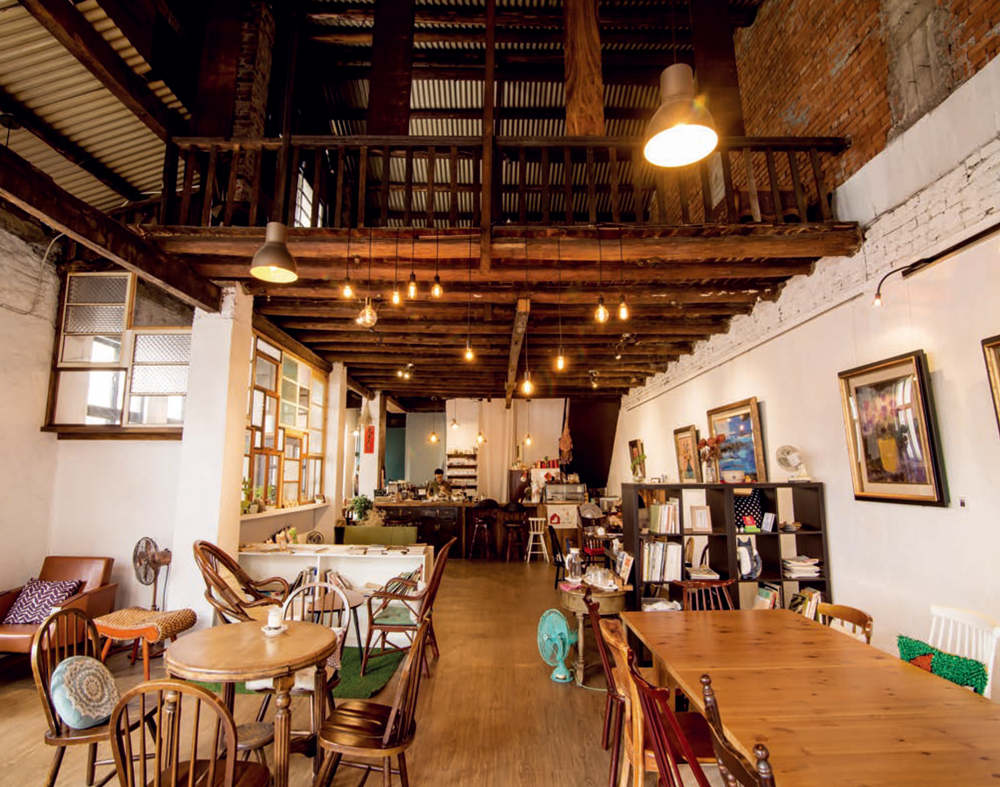

東京迪士尼樂園
首頁
關於
影片
遊樂設施 ▼
Ride 1
Ride 2
Ride 3
Ride 4
Ride 5
Ride 6
Ride 7
Ride 8
Ride 9
Ride 10
美食餐廳 ▼
頑熊餐廳
爆米花推車
西部牛仔廚房
奧爾良咖啡廳
莎拉奶奶的廚房
打卡景點 ▼
星空商店
夢幻童話城堡
唐老鴨紀念品店
洋裝花園打卡牆
愛麗絲迷宮花園
表演活動 ▼
白天遊行
夜間燈光秀
城堡投影秀
季節限定活動
園區資訊 ▼
地圖導覽
入園指南
交通與住宿
奧爾良咖啡廳

擁有法式浪漫風情的咖啡館，提供精緻甜點與香濃咖啡，是放鬆休憩的理想之地。